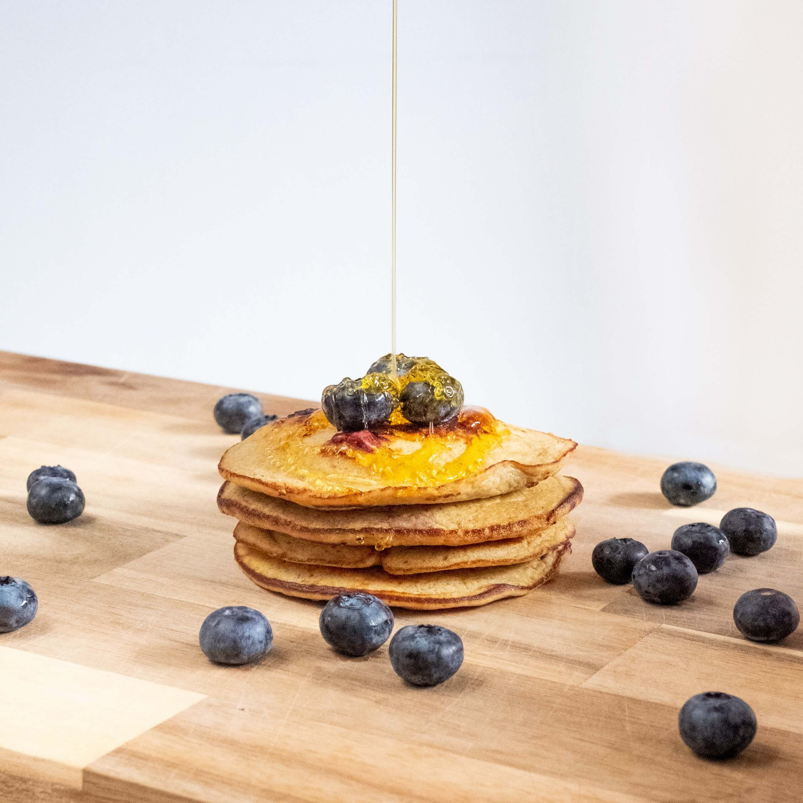

February 2020
Food is a second passion to me alongside design. I launched Talking Sumac to hold my recipes somewhere online allowing me to not only to share my love of cooking but also my recipes with family and friends.
Sumac is one of my favourite spices and trying to play off of the phrase “Talking Smack” - I came up with Talking Sumac. I had a vague idea of where I wanted to take this brand but I thought it wise to bring in the natural colour palette of the Sumac berry which is where the vibrant red and rich green colour scheme comes into play.
Logomark created for Talking Sumac
What is a good food blog without a recipe page? I deliberately designed these recipe pages to evoke the feeling of pieces of paper overlapping much like they do in my hand-written notebook where I jot down my recipes as I go.
Alongside creating the recipes I also shoot all the food that goes into the collection. Talking Sumac is very much a work in development but one I hope to keep adding to over the course of the years to come.
